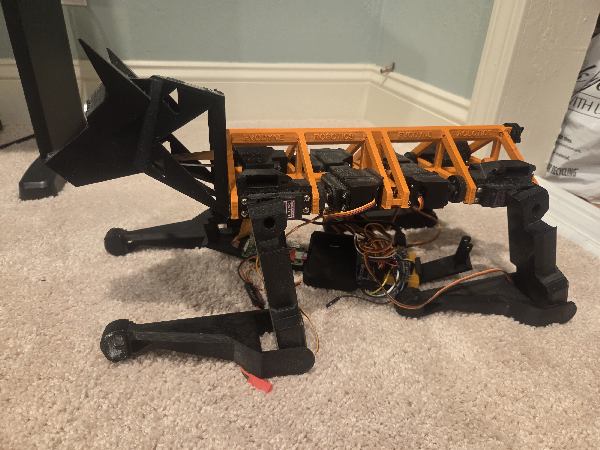
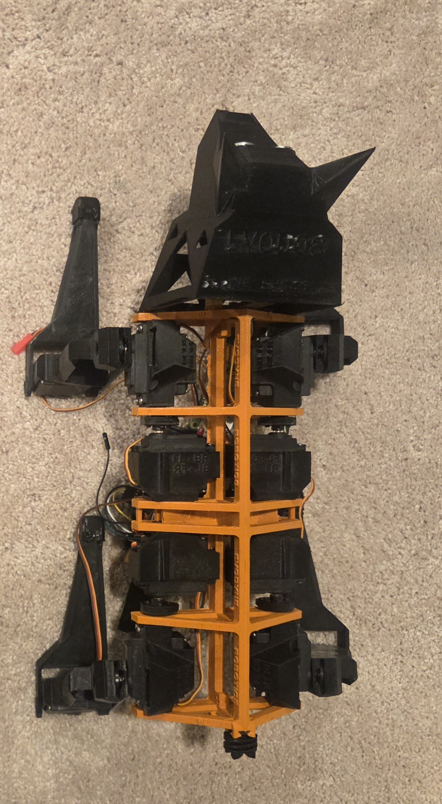
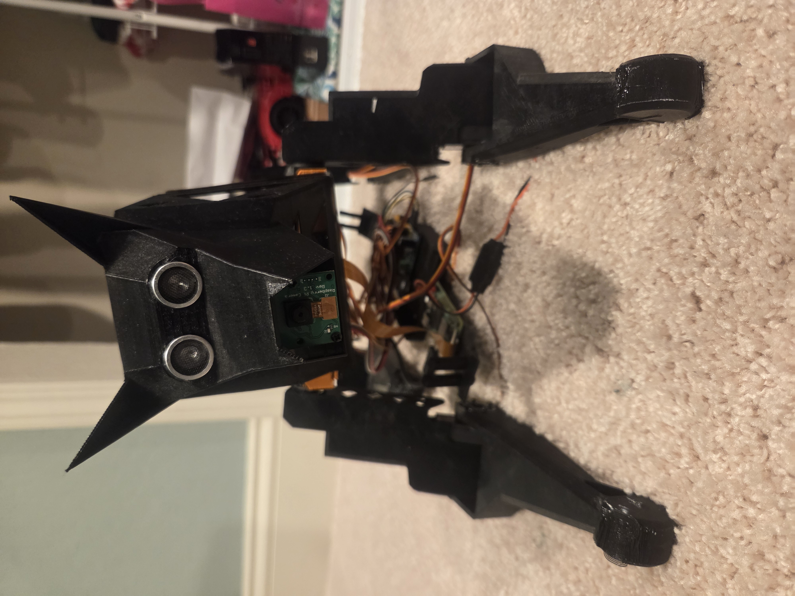
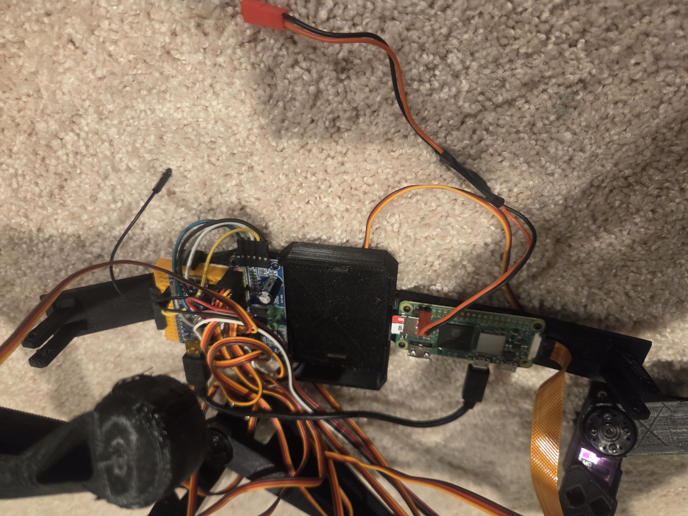

Robotics & Embedded Systems

Robot Dog Prototype
A custom-built quadruped robot designed to explore gait control, embedded actuation, and real-time motion coordination. The platform features independently actuated legs, programmable walking modes, and a lightweight structural frame optimized for stability and balance.
This quadruped robot was created to experiment with legged locomotion and embedded control systems. The chassis was designed for balanced weight distribution and rigidity. Each leg uses multiple servos to replicate hip and knee joints, allowing controlled multi-axis motion. The firmware manages servo timing, gait cycles, and movement transitions using custom control algorithms. Additional focus was placed on structural strength, cable management, and creating a platform that can be expanded with sensors such as IMUs, distance modules, or cameras.

Chassis & Frame Design

Electronics & Wiring

Motion Testing